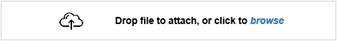

Card Transactions
From Help wiki
Main Page → Fleet / Card Services / Transactions → Batches | Transaction → Validation Types | Card Transaction Date Check | Card Troubleshooting → Card Interfaces
Contents |
Overview
This screen enables you to import, process, post and review card transactions created from files provided by you card services provider.
Visit Card Interfaces for a directory of the available interfaces with a link to detail page for each one.
Process Pages
Filters
| Field | Description |
|---|---|
| Supplier Code | The supplier code related to the imported data |
| Batch No | The unique batch number allocated per import file by the system |
| Card Number | The card number allocated to each transaction |
| Group Code | The client's group code if relevant |
| Client Code (R) | The client code. Note that this code is the #Recharge Client code allocated by the card record, which may be different to the client code associated to the vehicle's contract id (the same relationship is relevant to Client Group above. |
| From | The transaction date which can be used if searching for transactions in a particular date range |
| Contract ID | The contract id allocated by the card record |
| Reg No | The registration number associated with the contract id. #Note that this may be different to the registration number contained in the imported transaction file |
| To | The ending transaction date if searching in a date range. |
| Validation | Pending batches can contain incomplete records. Visit the Validation page for details of each type of issue and steps to take to fix them. |
| Recharges / HO | These filters allow the users to include or exclude recharge and history only status transactions. |
| Status |
|
Top Buttons
| Button | Description |
|---|---|
| Click to execute your chosen filtering. If the button is disabled, then the current filtering has been executed. | |
| Click to import a card services file. | |
| Click to purge unwanted data in a pending batch that you do not want to process. Records will be deleted from the Maintenance / Transactions screen and the Contracts / Maintenance tab. The purge button is enabled if
Purge is disabled if
|
Import Field Descriptions
The fields below are shown when the  button has been clicked. .
button has been clicked. .
| Field | Type | Description | [table]field |
|---|---|---|---|
| Card Interface | Text | Enter or lookup the card interface you want to use. | |
| Supplier | Display | Displays the Supplier Code and Name once a card interface has been selected. | |
| Import File | Import |  Imported file types may be for example: .csv, .txt, .zip, .gz, or .tgz | |
| Button | The upload button is enabled when a file has been added. | ||
| Button | Cancel if you don't want to finish the import. | ||
| Button | Save the imported file. You will now see the saved transactions. |
Batch Column Descriptions
When an import is completed or a data selection is returned, the columns below are shown.
| Field | Type | Description | [table]field |
|---|---|---|---|
| Batch-Item | The unique batch and item number allocated by the system. Use the hyperlink to navigate to the Transaction tab to review all of the item details. | ||
| Supplier | The supplier code related to the imported data | ||
| Group | The client's group code if relevant | ||
| Client (R) | The client code. Note that this code is the #Recharge Client code allocated by the card record, which may be different to the client code associated to the vehicle's contract id (the same relationship is relevant to Client Group above. | ||
| Contract | The contract id allocated by the card record. Use the hyperlink to navigate to the Contracts / Maintenance tab to review the contract's transactions. | ||
| Reg No | The registration number associated with the contract id. #Note that this may be different to the registration number contained in the imported transaction file | ||
| Card Number | The card number allocated to each transaction. Use the hyperlink to open the Display/Edit Card screen to update card details. | ||
| Odo | The ending transaction date if searching in a date range. | ||
| Odo | Check box | When imported or checked, Odometer values are validated in order to keep bad readings from being used for reporting. [gb_controls]odometer_valid_tolerance stores a percentage tolerance, e.g. 20% for use in this validation. This is used in conjunction with the Estimated Odometer Calculation to determine if the odo reading should be treated as valid or not. | |
| Validation | Use the Validate a card transactions batch process to review validation warnings and fix validation failures showing in your batches. | ||
| Date | The transaction date which can be used if searching for transactions in a particular date range | ||
| R? | Y or N | ||
| Qty | |||
| Net | |||
| GST | |||
| Amount |
Pagebar
| Field | Type | Description | [table]field |
|---|---|---|---|
| Page | Number | Use the arrows to navigate to the First Page, Previous Page, Next Page or Last Page You can skip to any page within the range by typing the page number into this field. Hit 'Enter' to refresh the screen. | |
| Page x of x | Number | Displays the page you are on and the total number of available pages. |
Screen Legend
| Field | Description |
|---|---|
| Failed | Transactions have a pink background. The transaction can't be processed. Go to the Validate a card transactions batch process page for more details. |
| Warning | Transactions have a yellow background. The transaction can be processed, but there is a card setting you should review. Go to the Validate a card transactions batch process page for more details. |
| Pending | Transactions with red text are pending. These records are also shown in the Contracts / Maintenance tab as Pending. |
| Posted | Transactions with black text are posted. These records are also shown in the Contracts / Maintenance tab as Posted or Recharge. |
| Deleted | Transactions with grey text are deleted. These records are not displayed in the Contracts / Maintenance tab. |
Action Buttons
| Button | Description |
|---|---|
| Prints the selected transactions into a PDF or csv file. Note that the csv file contains additional transaction details not necessarily displayed on the batch screen. | |
| Click to check each transaction. The results of the checks are shown in the the "Validation" column. Click to re-run the check process. This will refresh the details in the "Validation" column. The check process also validates the odometer readings against valid odometer readings stored in the maintenance table. All pending transactions (including card service transactions) in the maintenance table are included in the odometer validation. If the odometer reading is not zero and is not one of the error values (e.g. 777) and the validation method selected is the "3) Contract Km Method" (refer to Estimated Odometer Calculation) but fm_contract->contract_kms are set to 0, the odometer reading will be treated as valid. | |
| You can post once the selection contain no failed, deleted or posted transactions. The Post button will permanently update the maintenance file and allow relevant transactions to be recharged via recharge billing. Transactions are changed from a status of 'pending' to 'posted' and cannot be re-posted. | |
| A transaction can be deleted if you use the check box to select it and then click on the Delete button. Deleted records are no longer visible in this screen, but remain in the records with a 'deleted' status. To permanently delete transactions, use the 'Purge' feature. |
Validations and Alerts
Below are alerts that you may receive if a file cannot be imported or saved.
| Alert | Comments |
|---|---|
| Import | |
| Supplier is missing | Alert is shown if upload is clicked without an available supplier. Process page: Link a supplier to a card interface |
| Please specify a valid card interface code | Alert is shown if an invalid interface code is entered/selected. |
| Already imported in batch'{interface_batch_no}'! OK to Re-import else Cancel? | A batch has already been created with a file that is an exact match for the file being imported. Cancel this import. Sometimes you may need to re-import a file if you have previously purged an imported file before it was posted. This is an unusual situation. Before proceeding: |
| Please enter a valid 'Invoice Date'. | To save a card import, the "Invoice Date" and "Invoice No" to be used for the records must be entered. |
| The format of the Import File does not match the selected Card Interface! Please check your selections and try again | Possible reasons for this alert are as follows:
|
| Save | |
| Cannot post as some or all of the transactions have been deleted and, or failed. | If you are re-enabling deleted transactions, you may see this alert message. Click OK then click Abort. The deleted transactions will have been refreshed and the required "Validation" message will be shown. |
| '{reference/invoice_no}' already exists on another transaction for supplier '{supplier_code}'. '{supplier_code}' does not allow duplicate reference or invoice number entries. | This supplier has Suppliers / Account "Allow Duplicate Reference" un-checked. 1. You must use a unique reference number for this recordor, 2. Edit the supplier record and check on "Allow Duplicate Reference". |
System Notes
- 10709: Modify Card Txn Import Rules for "Failed Card". Live 18/11/2014
- (DEV-20560) Card Services Import failed due to size - improve error message. Live 14/01/2019
- (DEV-20824) Fuel Transaction import validations run in wrong sequence. Live 06/11/2019
- (DEV-20946) Attachment Drag & Drop function (phase 2) Live 06/04/2020
- (DEV-21126) Card Services Import Error - allow zip files. 09/10/2020
- (DEV-20547) Add foreign key constraints for batch_no, invoice_no and payment_no. Live 18/01/2021
- (DEV-21481) Maintenance records corrupted by the card services Check process. Live dd/08/2021
- (DEV-21632) Prevent corruption of unique_ids in Fuel imports - add checking code. Live 18/07/2022
- (DEV-21606) Prevent duplicate invoice numbers. Live 08/08/2022
- (DEV-21947) Unable to upload Chargefox Transaction File. Live 02/10/2023
- (DEV-22223) Card Services - modify logic used in Purge process. Live 24/02/2025
- (DEV-22269) Card Services - FLEETCORD - able to import transactions when Supplier ID is missing. Live dd/mm/2025

{kind=link}
{kind=link}